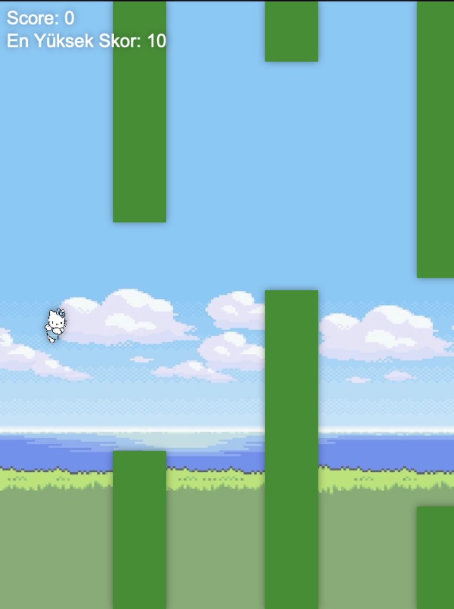

Flappy Kitty Oyunu
Bu proje, HTML5 Canvas ve JavaScript kullanılarak geliştirilmiş, hem web hem de mobil tarayıcılarda çalışabilen basit ve eğlenceli bir Flappy Bird tarzı oyundur. Oyunda kullanıcı, bir kuş karakterini borular arasından geçirerek mümkün olan en yüksek skoru elde etmeye çalışır. Proje; animasyonlar, çarpışma algılama, skor kaydetme, ses efektleri ve responsive tasarım gibi temel oyun geliştirme tekniklerini içerir. Ayrıca, yerel sunucu kullanılarak mobil cihazlarda test edilip oynanabilirliği sağlanmıştır. Tasarımda kullanıcı deneyimini artırmak için gölge efektleri ve arka plan görselleri de kullanılmıştır.
Kullanılan Teknolojiler
- HTML5
- JavaScript
Linkler
Öğrendiklerim
HTML5 Canvas kullanarak 2D oyun tasarımının temellerini öğrendim. JavaScript ile animasyon oluşturma, oyun döngüsü (game loop) ve çarpışma algılama (collision detection) gibi temel oyun mekaniklerini kodladım. Görsel ve ses dosyalarını JavaScript üzerinden oyuna entegre ederek kullanıcı deneyimini zenginleştirdim. Mobil uyumluluk ve responsive tasarım konularında pratik yaparak oyunu hem masaüstü hem de mobil tarayıcılarda çalışacak şekilde optimize ettim. Skor kaydı fonksiyonu ekleyerek oyun deneyimini geliştirdim. Oyun grafiklerine gölge efekti, özel renkler ve arka plan görseli ekleyerek tasarımı kişiselleştirdim. Ayrıca, IP adresi üzerinden yerel sunucu bağlantısıyla mobil cihazda test gerçekleştirmeyi öğrendim.
← Anasayfaya Dön